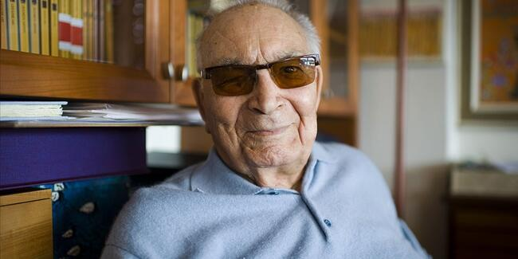

EDEBİYAT
Türk edebiyatının çınarı Yaşar Kemal'in 6. ölüm yıldönümü
Gerçek adı Kemal Sadık Gökçeli olan usta yazar, Nigar Hanım ile çiftçi Sadık Efendi'nin oğlu olarak, Adana sınırları içerisindeki Osmaniye'de 6 Ekim 1923'te dünyaya geldi. Bazı kaynaklara göre 1926'da doğdu.
Kemal'in Van-Ercişli olan ailesi, 1. Dünya Savaşı yıllarında sırasıyla Diyarbakır, Şanlıurfa ve Gaziantep'e gitti, son olarak da Adana'ya yerleşti.
Bir buçuk yıl süren göç esnasında Yusuf adlı yaralı bir çocuğu yanına alarak evlat edinen Sadık Efendi, henüz 4 yaşındaki Kemal'in gözleri önünde, Yusuf tarafından öldürüldü. Kemal, bu olaydan çok etkilendiğinden 12 yaşına kadar kekeme konuştu.
Yaşar Kemal, küçük yaşta bir kaza sonucu sağ gözünü kaybederken, 8 yaşındayken köye gelen bir tuhafiyecinin köy kadınlarının borcunu yazmasından etkilenip, yazmaya ilgi duydu. Küçük yaşta doğaya, insanlara ve topluma karşı ilgi duyarak eserlerinin temelini oluşturan Yaşar Kemal, ilkokula gitmeden önce "Aşık Kemal" mahlasıyla halk şiirlerine imza attı.
İlkokula 9 yaşında başlayan Kemal, okul arkadaşı Aşık Mecit ile aşıklarla atışacak derecede türküler söyleyip ağıtlar yakarken, annesinin engel olmasından dolayı saz çalmayı tam anlamıyla başaramadı. Kemal, 1938'de mezun oldu.
İlk şiiri 1939'da, ilk kitabı 1943'te yayımlandı
Yaşar Kalem'in kaleme aldığı ilk şiiri "Seyhan", 1939'da Adana Halkevi Dergisi'nde yayımlandı.
Ortaokula 1941'de başlayan ancak son sınıfta hastalandığı ve kendini edebiyata verdiği için, yatılı öğrencilik hakkını kaybeden Kemal, ırgat katipliği, memurluk, ırgatlık, inşaat denetçiliği, öğretmen vekilliği ve arzuhalcilik gibi farklı işlerde çalıştı.
Kemal, hayatın zorluklarıyla olgunlaşırken, toplumun acılarını ve yaşadıklarını eserlerine yansıttı. Halk edebiyatına da ilgi duyan Kemal'in şiirleri 1940'lı yıllarda "Çığ", "Ülke", "Millet", "Kovan" ve "Beşpınar" dergilerinde okurla buluştu.
Aynı yıllarda Pertev Naili Boratav, Nurullah Ataç, Güzin Dino, Arif Dino ve Abidin Dino ile tanışan Kemal, Abidin Dino vesilesiyle okuduğu "Don Kişot" eserinden etkilenerek, Batı edebiyatı üzerine daha çok okuma yaptı.
Usta yazarın, 1940-1941 arasında Çukurova ile Toroslar'dan derlediği ağıtları içeren "Ağıtlar" adlı ilk kitabı, 1943'te Adana Halkevi tarafından yayımlandı.
Yaşar Kemal, 1946'da askerliğini yaptığı Kayseri'de ilk uzun hikaye kitabı "Pis Hikaye"yi kaleme aldı. 1950'de komünizm propagandası yaptığı iddiasıyla tutuklanan Kemal, bir süre Kozan cezaevinde yattı.
Yaşar Kemal imzasını ilk kez 1951'de kullandı
İstanbul'a 1951'de taşınan Kemal, kısa bir süre işsizlikten sonra "Yaşar Kemal" imzasıyla, 1963'e kadar Cumhuriyet gazetesinde, fıkra ve röportaj yazdı.
Yazılarında Anadolu insanının iktisadi ve toplumsal sorunlarını anlatmaya çalışan Kemal'in yine bu dönemde yaptığı "Dünyanın En Büyük Çiftliğinde Yedi Gün" başlıklı röportajı, Gazeteciler Cemiyetince verilen "Özel Başarı Armağanı"na değer görüldü.
Kemal, 1952'de Sultan 2. Abdülhamid'in baştabibi Jak Mandil Efendi'nin torunu Thilda Serrero ile evlendi. Türkçe, İngilizce, Fransızca ve İspanyolcayı iyi bilen Serrero, Kemal'in 7 eserini yabancı dillere çevirdi, çeşitli yayınevleriyle ilişkiler kurarak, eşinin Avrupa'da daha çabuk tanınmasını sağladı.
Raşit Gökçeli adlı bir oğlu olan çiftin evliliği, Serrero'nun vefat ettiği 17 Ocak 2001'e kadar devam etti. Usta yazar, 2002'de Ayşe Semiha Baban ile evlendi.
"Bebek", "Dükkancı" ve "Memet" adlı hikayelerinin de içinde bulunduğu "Sarı Sıcak" kitabını 1952'de yazan Kemal, yoksulluk, şiddet, dayanışma, yozlaşma, doğa tutkusu, insan-doğa çatışmasını eserinde işledi.
Yaşar Kemal, "Sünger Avcıları" başlıklı röportaj dizisiyle okuyucuların beğenisini kazanırken, 1955'te Varlık dergisinin "Roman Armağanı"nı kendisine kazandıran romanı "İnce Memed"i yayımladı. Yazarın, 1953-1954'te Cumhuriyet gazetesinde dizi olarak yayımlanan yazılarından oluşan eser, 40'tan fazla dile çevrilerek, dünya çapında ilgi gördü.
Edebiyat hayatının yanı sıra, siyasi faaliyetlere devam eden Kemal, 1967'de çıkarmaya başladığı "Ant" adlı derginin eklerinden biri sebebiyle 18 ay hapse mahkum oldu. Daha sonra bu karar, Yargıtay tarafından bozuldu.
Yazıları ve siyasi etkinlikleri dolayısıyla birçok kez kovuşturmaya uğrayan Yaşar Kemal, 1974-1975'te Türkiye Yazarlar Sendikası'nda Genel Başkan olarak görev yaptı. Kemal, 1988'de kurulan PEN Yazarlar Derneği'nin de ilk başkanı oldu.
Eserlerinde sade ve akıcı bir üslup kullanmayı tercih eden ünlü yazar, roman ve öykülerinde çoğunlukla Çukurova'da yaşanan insan dramlarını işledi. Kemal'in "İnce Memed"in de aralarında bulunduğu 9 eseri de beyazperdeye aktarıldı ve birçok eseri tiyatroya uyarlandı. Kitaplarında Anadolu'nun efsane ve masallarından da yararlanan Kemal, 1970'ten sonra yazdığı romanlarında ise şehir insanının hayatını ele aldı.